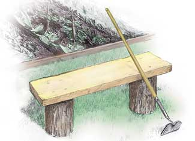
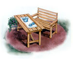

3 Easy Benches
Build one or more of these easy-to-build, attractive outdoor benches, from mail-order plans: a log and plank bench, the Leopold bench and the Jordan Pond bench and table.
By Steve Maxwell
April/May 2004
When's the last time you sat quietly in the outdoors? Do you even have a place where you can sit in your garden or woodland? Every property owner should have at least one bench to enhance a favorite spot. Our trio of build-it-yourself bench designs lets you choose the quick, inexpensive and easy Plank Seat shown above; the Leopold Bench with its clever backrest design; or the solid, classic look of the Jordan Pond Bench and Table. And, we have detailed plans and materials lists available to help those of you who are not experienced woodworkers.
The Plank Seat
A couple of log sections and a sturdy board are all you really need to make the Plank Seat for a quiet spot by a garden, lakeshore or campfire ring. Although a few tools are handy for building this bench, they're not essential. If you don't have any short logs handy, ask a friend with a chain saw to cut a couple of 12- to 14-inch-long stumps off a log for the two uprights you'll need. A simple plank across the top does the rest. A rough-sawn 2-by-12 is terrific here, but a piece of milled, construction-grade lumber works, too. Whatever you choose, the bench will look best if you extend the seating plank beyond the uprights by 6 to 8 inches.
If you're a traditionalist, fasten the plank to the stumps with finch hardwood dowels driven into holes bored into the stumps. Hot-dipped galvanized spikes or 4-inch-long wood screws are a faster, though more modern, alternative.
Place the stumps on a well-drained spot so they last longer, and peel the bark as it loosens over time. The large, flat seating plank is ideal for visitors to carve their initials in as a reminder of their time at your place. Think of it as a great, big outdoor guest book.
Leopold Bench
Great writers give the world more than words; they offer a new way of seeing, and that's the enduring legacy of American naturalist Aldo Leopold. Author of the 1949 environmental classic A Sand County Almanac and cofounder of The Wilderness Society, Leopold spent a great deal of time thinking about our place in the natural world. He promoted conservation of natural resources and an ethical relationship between people and the land. His simple, sturdy bench design reflects these ideals.
Leopold designed the bench while visiting the run-down farm he purchased along the Wisconsin River in central Wisconsin. Leopold, his wife, Estella, and their five children renovated the only structure on the property-a chicken coop-into a small cabin for weekend retreats. "The Shack," as the structure is now called, is the only chicken coop on the National Register of Historic Places.
The bench you see here, The Shack and Leopold's writings are all reflections of his commitment to living lightly on the land. A handsaw, drill, a few bolts and some screws are all you need to build your own Leopold Bench.
You could use cedar or some other rot-resistant wood. Even inexpensive spruce or pine will last 10 years or more outdoors, especially if you put the bench under cover during the off-season. Screw replaceable wooden foot pads to the bottom of each leg to extend your bench's life even longer.
To order construction drawings, instructions and a materials list for the Leopold Bench, click here.
Jordan Pond Bench & Table
If you've ever visited Acadia National Park on Mount Desert Island along the coast of Maine, chances are you've stopped in at the Jordan Pond House restaurant. For almost a hundred years, park visitors have enjoyed afternoon tea and piping hot popovers served on the restaurant's lawn overlooking the pond and the grand scenery of Acadia.
Our third design-a bench and matching table-was inspired by the sturdy, classic outdoor furniture used at the Jordan Pond House.
The Jordan Pond Bench and Table are easy to make. Standard 5/4-by-6-inch decking lumber, weatherproof glue and corrosion-resistant screws make this design strong and long-lasting. To order plans for the bench and table, click here.
Complete Plans Available
Those of you with woodworking experience will be able to build these benches using the illustrations as a guide. For those of you needing more detailed plans, we have construction drawings, instructions and materials lists available.
|
 Len Churchill Two sturdy logs and a rough-cut plank make a satisfying garden bench. |
 Len Churchill Aldo Leopold's simple bench design offers hours of contempletive sitting. |
 Len Churchill Grace your patio or backyard with this classic picnic table and bench. |